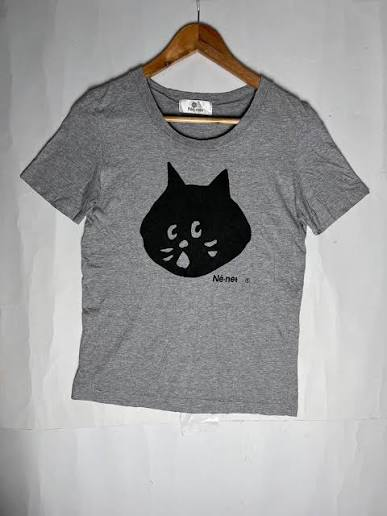
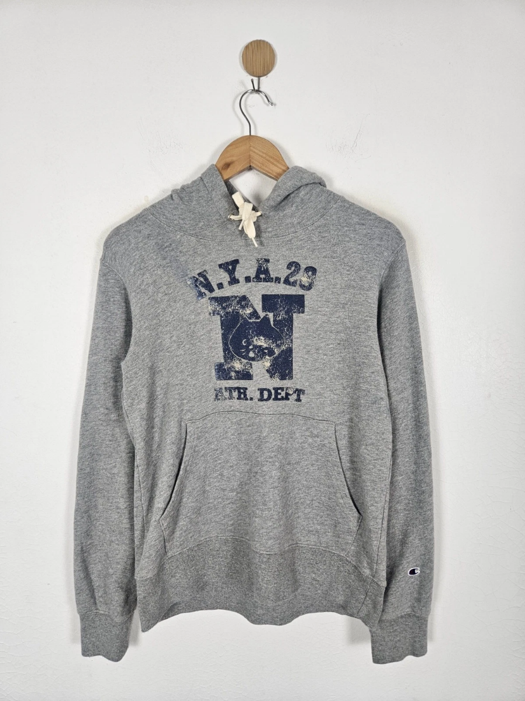

Ne-Net's Origin
Ne-Net is a Japanese fashion brand created by Kazuaki Takashima in 2005. Many of its designs feature a cute cat character named Nyaa. Takashima wanted to create a fashion brand that broke the norm with playful androgynous designs, while most modern fashion brands were focusing on staying modern and appealing to traditional audiences. Ne-net played an entirely different game, which set it apart from other Japanese fashion brands. The Ne-net brand prioritized comfort and inclusivity over the strict guidelines of the fashion industry. Even though the 2020 covid pandemic caused Ne-Net to cease it's production, its brand image grows internationally, now more than ever.
Info on Ne-Net's Origin
My favorite Ne-Net piece
I bought this hoodie in 2023 on Mercari, a Japanese online marketplace. At the time, I had purchased it for around 14 dollars USD. Since then, prices of Ne-Net items have increased, especially in the west. The reason for this growth in popularity is not due to the brand marketing itself. The brand has grown in popularity due to it's significance in online communities that are interested in Japense fashion. Many people online are captivated by the brand's fun and eye catching mascot, and it's increasing rarity.
Ne-Net x Champion Hoodie Ebay Listing
Ne-Net Runway Appearances
- Fall / Winter 2007 - Women
Ready-to-wear, Runway Collection, Tokyo
- Spring / Summer 2008 - Women
Ready-to-wear, Runway Collection, Tokyo
- Fall / Winter 2008 - Women
Ready-to-wear, Runway Collection, Tokyo
- Spring / Summer 2009 - Women
Ready-to-wear, Runway Collection, Tokyo
- Fall / Winter 2009 - Women
Ready-to-wear, Runway Collection, Tokyo
- Spring / Summer 2012 - Women
Ready-to-wear, Runway Collection, Tokyo
- Fall / Winter 2012 - Women
Ready-to-wear, Runway Collection, Tokyo
- Spring / Summer 2013 - Women
Ready-to-wear, Runway Collection, Tokyo
- Fall / Winter 2013 - Women
Ready-to-wear, Runway Collection, Tokyo
- Spring / Summer 2015 - Women
Ready-to-wear, Runway Collection, Tokyo